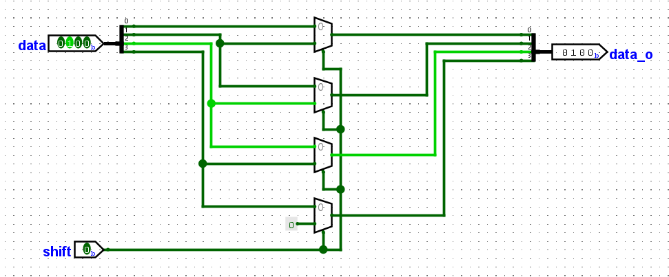
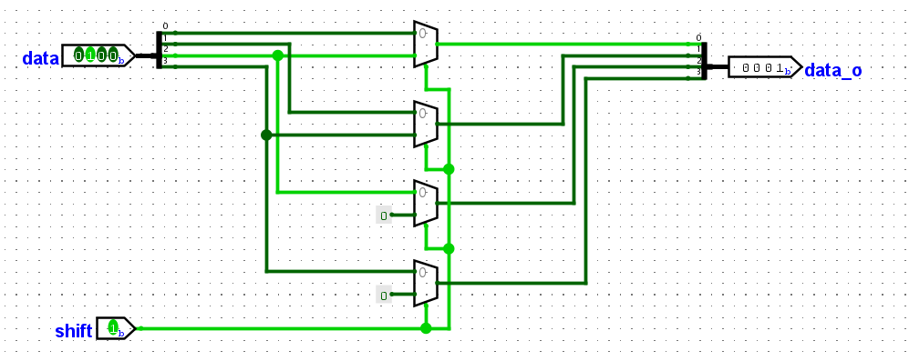
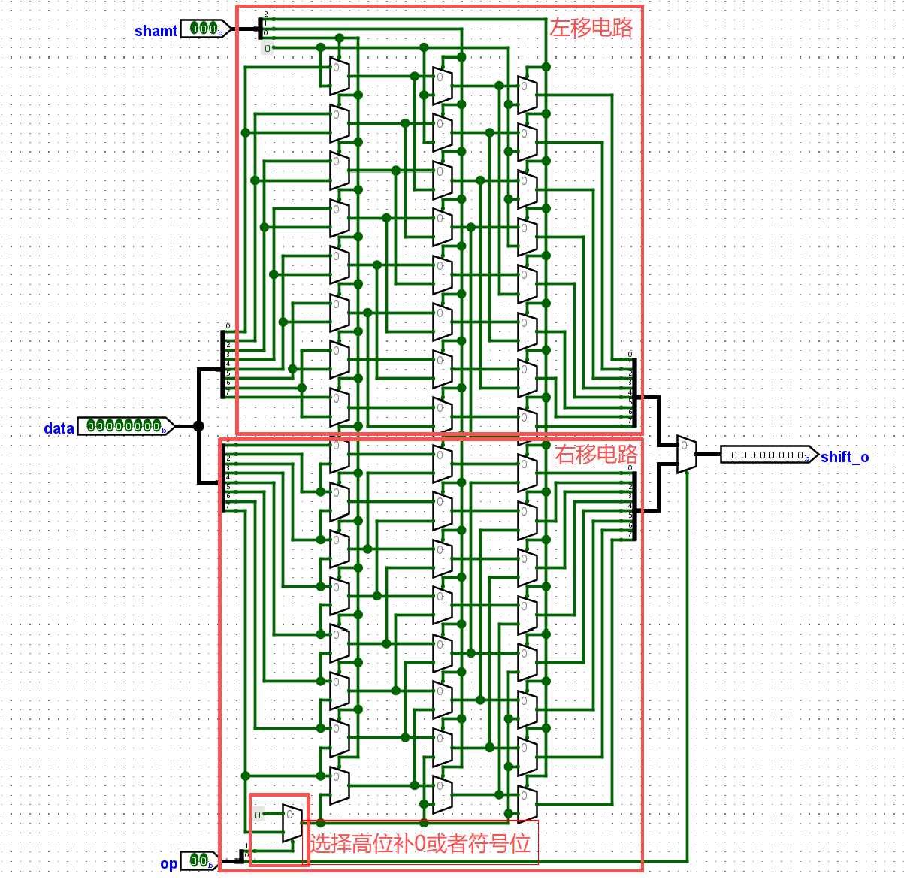
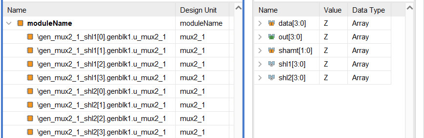

实验四 桶形移位器设计
桶形移位器 (barrel shifter) 由组合逻辑电路构成，可以用于任意多位的位移操作。 你应该在编程语言中使用过左移、逻辑右移、算数右移等操作。
左移与右移
逻辑右移与算数右移
逻辑右移（Logical Right Shift）与算术右移（Arithmetic Right Shift）都是常见的位移运算， 用于将二进制数的各个位向右移动若干位，但它们在符号位的处理上不同。
逻辑右移时高位直接补 0 ，低位丢失，不需要考虑符号位。 以下图为示例，每行逻辑右移一位。
1 11000010 01000010
2 -> 01100001 -> 00100001
3 -> 00110000 -> 00010000
4 -> 00011000 -> 00001000
5 -> 00001100 -> 00000100
6 -> 00000110 -> 00000010
7 -> 00000011 -> 00000001
8 -> 00000001 -> 00000000
9 ... ...
算数右移时高位补符号位，符号位为1则补1，符号位为0则补0，低位丢失，因此需要考虑符号位。 以下图为示例，每行算数右移一位。
1 11000010 01000010
2 -> 11100001 -> 00100001
3 -> 11110000 -> 00010000
4 -> 11111000 -> 00001000
5 -> 11111100 -> 00000100
6 -> 11111110 -> 00000010
7 -> 11111111 -> 00000001
8 -> 11111111 -> 00000000
9 ... ...
从逻辑右移与算数右移示意图的第二列不难看出，当8位二进制数的最高位为0时，逻辑右移与算数右移没有区别。 但是最高位为1时，算数右移时高位补1。
左移操作 没有区分逻辑左移和算数左移，就是左移低位补0，高位丢失。
移位的应用
乘除法运算
左移可以替代乘以2的幂次，右移可以替代除以2的幂次。 前提是数值的有效位没有消失，算数右移可以对补码表示的负数进行除以2的幂次。 你可以使用一门编程语言例如C/C++、Java对数进行左移、逻辑右移、算数右移，输出并观察结果。
循环移位
循环位移不会丢失高位或者低位，而是将移出的部分放在补充的位置。
1 11000010 01000010
2 -> 01100001 -> 00100001
3 -> 10110000 -> 10010000
4 -> 01011000 -> 01001000
5 -> 00101100 -> 00100100
6 -> 00010110 -> 00010010
7 -> 00001011 -> 00001001
8 -> 10000101 -> 10000100
9 ... ...
尽管我们的桶形移位器不支持循环移位，但是我们可以通过两次逻辑移位和或运算实现循环移位。
例如可以通过 y = (x >> n) | (x << (32 - n)); 实现32位二进制数循环右移程序。
桶形移位器电路
桶形移位器可以移位任意位，例如一个16位的桶形移位器，可以移位 0~15 位，大于15位的移位操作没有什么实际的意义。 下面的电路实现了4位宽二进制数逻辑右移 0 或者 1 位的功能，最高位补零即可。使用了4个二选一选通器。

电路实现很简单，当选择端输入为1时，选择高一位的信号，否则选择对应位的信号。

同样，当选择端输入为1时，选择高两位的信号，否则选择对应位的信号，即可实现逻辑右移 0 或者 2 位的功能。 那么如果需要逻辑右移 3 位，则将逻辑右移 2 位之后的信号给上面逻辑右移 1 位的电路即可完成功能。
多路选通器
二选一选通器
1 module mux2_1 #(
2 parameter W = 8
3 ) (
4 a
5 ,b
6 ,sel
7 ,out
8 );
9
10 input a, b, sel;
11 output out;
12 wire [W-1:0] a, b, out;
13 wire sel;
14
15 // assign out = sel ? b : a;
16 assign out = ({W{sel}} & b) | ({W{~sel}} & a);
17
18 endmodule
二选一选通器代码示例使用了两种常见的实现方式，第一种方式是行为级建模，使用三目运算符，
在高级语言里面很常见，当 sel 为真时 out = b，否则 out = a 。
第二种方式是电路级建模， {W{sel}} 是 位拼接操作，将1位宽的sel信号复制W份拼接在一起。
比如 {32{1'b0}} 表示 32'b0 ， {4{8'h12}} 表示 32'h12121212 。
四选一选通器
四选一选通器可以通过3个二选一选通器组成。下面是代码示例。
1 module mux4_1 #(
2 parameter W = 8
3 ) (
4 a
5 ,b
6 ,c
7 ,d
8 ,sel
9 ,out
10 );
11
12 input a, b, c, d, sel;
13 output out;
14 wire [W-1:0] a, b, c, d, out;
15 wire [1:0] sel;
16
17 // assign out = sel[1] ? (sel[0] ? d : c) : (sel[0] ? b : a);
18 assign out = ({W{sel == 2'b00}} & a) | ({W{sel == 2'b01}} & b) |
19 ({W{sel == 2'b10}} & c) | ({W{sel == 2'b11}} & d);
20
21 endmodule
多选一选通器
组合逻辑中慎用 always 语法
我们其实已经初步掌握了一些 Verilog 语法，但其实示例代码中还没有与 always 相关的部分。 always 可以用来实现组合逻辑电路，以后的实验还会使用 always 实现时序逻辑电路。 因为 always 的使用比较复杂，我希望大家在掌握之前慎用，防止出现你难以理解的bugs。
1 // assign out = a & b;
2 always @(a or b) begin
3 out = a & b;
4 end
1 // assign pop_cnt = in[0] + in[1] + in[2] + in[3] + in[4] + in[5] + in[6] + in[7];
2 always @(*) begin
3 pop_cnt = 0;
4 for (integer i = 0; i < 8; i = i + 1) begin
5 pop_cnt = pop_cnt + in[i];
6 end
7 end
1 // assign out = sel[1] ? (sel[0] ? in[31:24] : in[23:16]) : (sel[0] ? in[15:8] : in[7:0]);
2 always @(*) begin
3 out = 0;
4 for (integer i = 0; i < 32; i = i + 8) begin
5 out = out | ({8{sel == (i/8)}} & in[i+7:i]);
6 end
7 end
always与assign区别很大， @(a or b) 是指当敏感信号列表中的a或者b的值发生变化时，执行更新赋值操作。
因此当a或者b变化时， out = a & b 这样就与 assign out = a & b; 是一个意思。
但是当敏感信号列表中只有 a 而没有 b 时，只有 a 改变了才会使得 out = a & b ，而 b 改变之后不会使得
out = a & b ，这样显然与 assign out = a & b; 或者与门电路的含义是不一样的。
always @(*) 表示敏感信号为所有输入信号，可以防止遗漏，发生上面那样的错误，偏离了与门电路的含义。
高亮的 pop_cnt = 0; 和 out = 0; 是不能遗漏的，否则他们没有初始值，会一直是 x 状态。
他们都与注释中使用 assign 写的电路含义是完全一致的，但是它们可以更好的参数化，不用修改代码就能调整参数。
最下面的例子给出了 四选一选通器 的实现方法。
八选一选通器
使用 assign 和 always 两种参考方法，实现八选一选通器，数据为8位宽，并 通过 testbench 程序检验两种方法功能是否完全一致。
桶形移位器电路实现

这里给出了8位桶形移位器电路实现方式，其中上面是左移电路，下面是右移电路， 右移高位补0或者符号位通过一位信号来选择是运算逻辑右移或者算数右移操作。 最后通过一个8位宽的二选一选通器选择是左移还是右移，完成了8位桶形移位器功能。
16位桶形移位器
使用前面的选通器，参考上图中的桶形移位器电路结构图，实现16位桶形移位器。 有4位shamt (shift amount) 输入信号控制移位量，2位op (operation) 信号用来控制操作类型， 2'b00表示左移，2'b01表示逻辑右移，2'b11表示算数右移。
当我们尝试使用 assign 去描述4位桶形移位器时，会发现很多重复的电路结构。
1 wire [3:0] shl1; // shift left 1-bit
2 assign shl1[0] = shamt[0] ? 1'b0 : data[0];
3 assign shl1[1] = shamt[0] ? data[0] : data[1];
4 assign shl1[2] = shamt[0] ? data[1] : data[2];
5 assign shl1[3] = shamt[0] ? data[2] : data[3];
6
7 wire [3:0] shl2; // shift left 2-bit
8 assign shl2[0] = shamt[1] ? 1'b0 : shl1[0];
9 assign shl2[1] = shamt[1] ? 1'b0 : shl1[1];
10 assign shl2[2] = shamt[1] ? shl1[0] : shl1[2];
11 assign shl2[3] = shamt[1] ? shl1[1] : shl1[3];
我们可以复制粘贴代码，然后仔细修改每一行代码，当然，也可以使用 generate 语法实现描述。
generate 可以构造循环结构，用来多次实例化某个模块，或者实现重复的语句操作。
我们给出两个代码示例来描述上面的4位桶形移位器代码片段示例1的结构。
注意 genvar 是在 generate 语法中用做变量使用的，不能使用 integer 做变量。
1 genvar i;
2 wire [3:0] shl1; // shift left 1-bit
3
4 generate
5 for (i = 0; i < 4; i = i + 1) begin
6 if (i == 0)
7 assign shl1[i] = shamt[0] ? 1'b0 : data[i];
8 else
9 assign shl1[i] = shamt[0] ? data[i-1] : data[i];
10 end
11 endgenerate
12
13 wire [3:0] shl2; // shift left 2-bit
14 generate
15 for (i = 0; i < 4; i = i + 1) begin
16 if (i < 2)
17 assign shl2[i] = shamt[1] ? 1'b0 : shl1[i];
18 else
19 assign shl2[i] = shamt[1] ? shl1[i-2] : shl1[i];
20 end
21 endgenerate
当然你也可以在 generate 块中多次实例化二选一选通器模块来描述这个电路。
1 genvar i;
2 wire [3:0] shl1; // shift left 1-bit
3
4 generate
5 for (i = 0; i < 4; i = i + 1) begin : gen_mux2_1_shl1
6 if (i == 0)
7 mux2_1 #(1) u_mux2_1(data[i], 1'b0, shamt[0], shl1[i]);
8 else
9 mux2_1 #(1) u_mux2_1(data[i], data[i-1], shamt[0], shl1[i]);
10 end
11 endgenerate
12
13 wire [3:0] shl2; // shift left 2-bit
14 generate
15 for (i = 0; i < 4; i = i + 1) begin : gen_mux2_1_shl2
16 if (i < 2)
17 mux2_1 #(1) u_mux2_1(shl1[i], 1'b0, shamt[1], shl2[i]);
18 else
19 mux2_1 #(1) u_mux2_1(shl1[i], shl1[i-2], shamt[1], shl2[i]);
20 end
21 endgenerate
在使用 generate 多次实例化某个模块时，在 for 循环的 begin 后面加上 : <generate_blk_name>， 可以在仿真时更好的区分每个模块，模块的命名会根据你添加的<generate_blk_name>生成模块的实例化名字。 这样你就可以更方便的选取某个模块观察信号，如下图所示。

2'b10 的操作
当控制操作类型的信号是 2'b10 时，上面使用logisim实现的8位桶形移位器电路是完成什么操作，为什么呢？